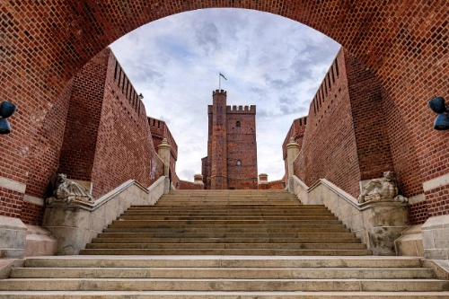
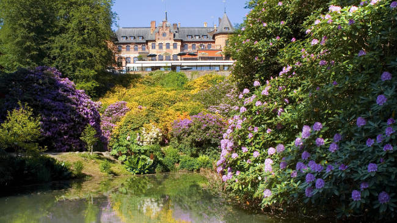
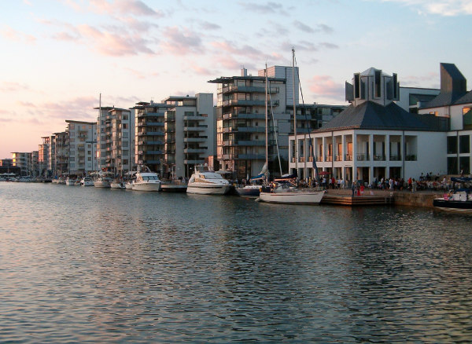

Kärnan

Helsingborgs mest kända landmärke och en symbol för stadens rika historia. Tornet uppfördes på 1300-talet och var en gång en del av en större borg. Från toppen bjuds du på en hänförande utsikt över staden, hamnen och Danmark på andra sidan sundet – en perfekt start på vår rundvandring.
Sofiero slott och slottsträdgården

En av Sveriges mest älskade slottsmiljöer, omgiven av praktfulla trädgårdar och blommande rhododendron. Sofiero var tidigare kunglig sommarbostad och är idag en plats för lugn, skönhet och inspiration. Här berättar vi om både den kungliga historien och det moderna kulturarvet som gjort Sofiero så populärt.
Norra Hamnen

Ett levande och stilrent område där havet möter stadslivet. Här promenerar vi längs kajen, ser båtarna lägga till och njuter av utsikten över Öresund. På sommaren fylls hamnen av människor, musik och doften av hav – en naturlig mötesplats för både helsingborgare och besökare.